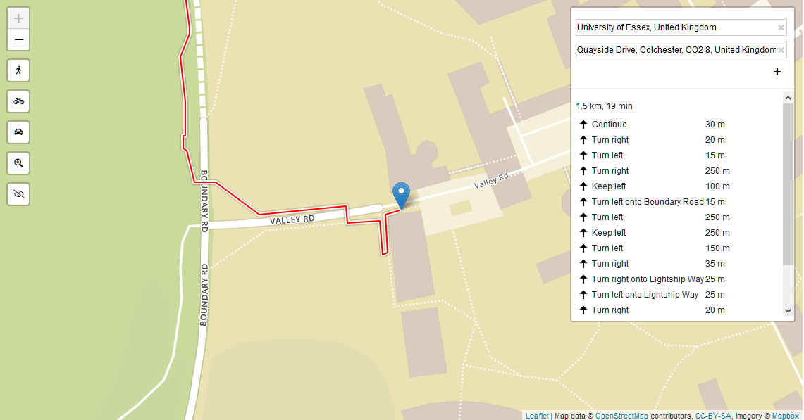
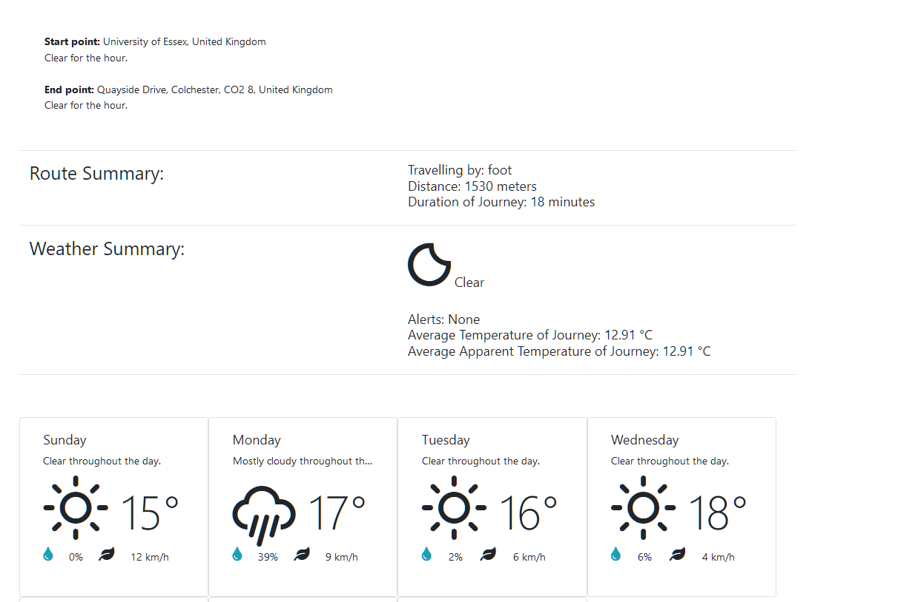
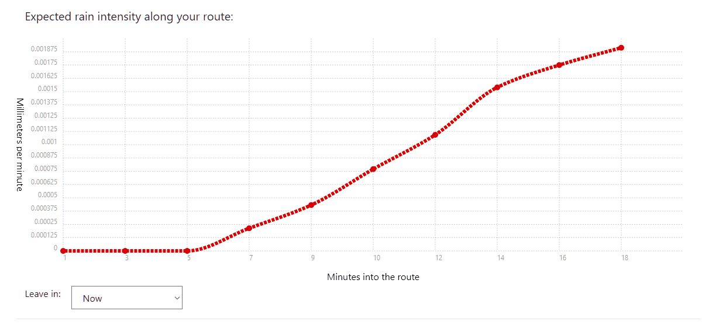
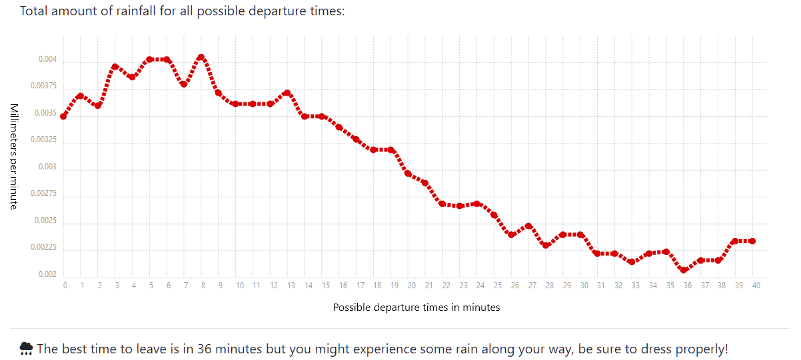

HELLO
HELLO
rain-check
A web application for simply avoiding bad weather
rain-check is an easy to use web application which its primary goal is to avoid bad weather. This is done by fetching highly accurate minute-by-minute weather data based off a route that a user has selected. It will display a detailed summary of the weather along the way and will calculate for you the most optimal time to leave to be able to avoid as much rain as possible.
Instructions on How to use:
Simply put your start point and end point in the text boxes and press enter, as shown below:

A route and weather summary, along with a basic weekly forecast will be shown below:

The first graph will show you the intensity of rain throughout your journey for multiple departure times:

The second graph will let you visualize the total rainfall of all the routes and calculate the best time to leave in order to avoid as much rain as possible:
